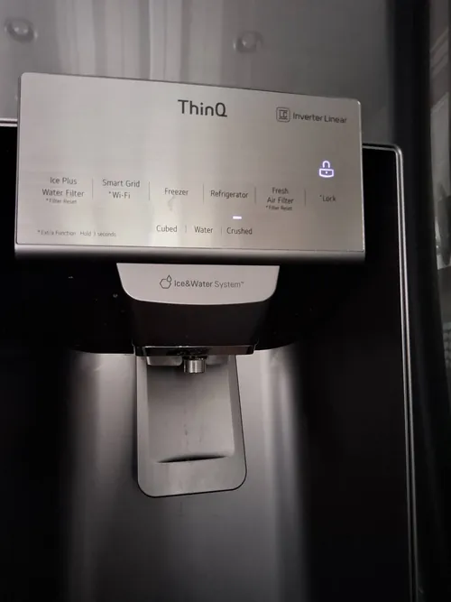

LG Refrigerator Repair: Built In Refrigerator Problems Homeowners Should Know
Built in refrigerators have become increasingly popular in modern kitchens thanks to their premium appearance, seamless integration with cabinetry, and advanced cooling technology. Many high end LG built in refrigerator models offer exceptional food preservation, sophisticated temperature management systems, and smart appliance features designed to improve convenience and efficiency. However, because these refrigerators are more complex than standard freestanding units, they can develop unique performance issues that require specialized diagnostics and professional LG refrigerator repair.
Unlike traditional refrigerators, built in models are designed to operate within enclosed cabinetry systems. While this creates a clean and attractive appearance, it also places greater importance on proper airflow, ventilation, and temperature management. Even minor performance issues can affect cooling efficiency and place additional stress on refrigerator components over time.
One of the most common built in refrigerator problems involves restricted airflow. Built in appliances rely on carefully engineered ventilation systems to remove heat generated during normal operation. If ventilation openings become blocked by dust, debris, cabinetry modifications, or improper installation, cooling efficiency may decline. Homeowners may notice longer operating cycles, higher internal temperatures, or inconsistent cooling throughout the refrigerator.

Temperature imbalance is another issue frequently encountered in built in refrigerator systems. Some homeowners notice that certain sections of the refrigerator remain colder than others, while some storage areas fail to maintain consistent temperatures. Because built in refrigerators often use multiple cooling zones, sensors, and airflow management systems, temperature inconsistencies may indicate developing problems with fans, sensors, dampers, or electronic controls.
Modern LG built in refrigerators utilize sophisticated electronic systems that continuously monitor appliance performance. Temperature sensors, control boards, evaporator fans, and communication components work together to maintain stable cooling conditions. If one of these systems begins to malfunction, homeowners may experience fluctuating temperatures, electronic error messages, unusual operating behavior, or reduced cooling performance. Professional LG refrigerator repair focuses on identifying the root cause rather than simply replacing individual components.
Ice maker problems are another common concern. Many built in refrigerators include advanced ice production systems that depend on proper cooling, water flow, and electronic communication. If temperatures become unstable or water supply issues develop, homeowners may experience slow ice production, small ice cubes, leaking water, or complete ice maker failure. Because multiple systems influence ice production, accurate diagnostics are essential when troubleshooting these symptoms.
Built in refrigerator owners also occasionally encounter excessive frost buildup. Frost accumulation may result from airflow restrictions, damaged door gaskets, defrost system failures, or sensor related issues. Excessive frost can reduce cooling efficiency, restrict airflow, and increase energy consumption if left unresolved. Early diagnosis helps prevent larger refrigerator problems and protects overall appliance performance.
Compressor related issues can have a significant impact on built in refrigerators. Many modern LG models use advanced inverter and linear compressor technology designed to improve energy efficiency and temperature stability. When compressor performance declines, homeowners may notice warm temperatures, unusual noises, extended runtime, or inconsistent cooling. Because compressor related symptoms often overlap with other refrigerator problems, professional LG refrigerator repair diagnostics are especially important.
Water leaks may also occur in built in refrigerator systems. Leaks can originate from clogged drain lines, frozen defrost drains, damaged water supply connections, faulty valves, or ice maker related components. Since built in refrigerators are installed within cabinetry, even small leaks can potentially affect surrounding cabinets, flooring, and kitchen finishes if not addressed promptly.
Electronic display and control panel issues have become increasingly common as refrigerator technology continues to advance. Touchscreen controls, digital displays, Wi Fi connectivity, and smart appliance features provide convenience but also introduce additional components that may require service over time. Problems involving displays, settings, communication systems, or error codes often require specialized testing procedures to diagnose accurately.
One challenge unique to built in refrigerator repair is accessibility. Because these appliances are integrated into cabinetry, servicing certain components may require additional disassembly and careful handling. Experienced technicians familiar with built in refrigerator systems understand how to perform diagnostics and repairs while protecting surrounding cabinetry and finishes.
Preventive maintenance plays an important role in supporting long term built in refrigerator performance. Keeping ventilation areas clean, replacing water filters regularly, inspecting door seals, monitoring temperature changes, and responding quickly to unusual symptoms can help reduce the risk of major repairs and improve appliance reliability.
Professional LG refrigerator repair helps homeowners protect their investment while maintaining the performance and appearance of their built in refrigeration system. Whether your refrigerator is experiencing cooling problems, ice maker failures, temperature fluctuations, water leaks, or electronic control issues, early diagnostics and proper repair procedures can help restore reliable operation and extend the lifespan of the appliance.